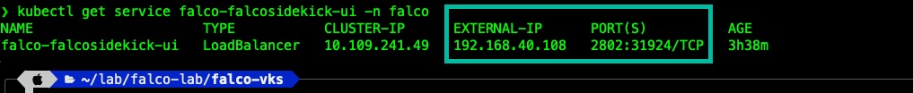
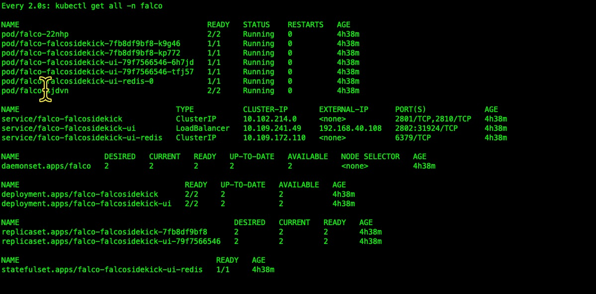
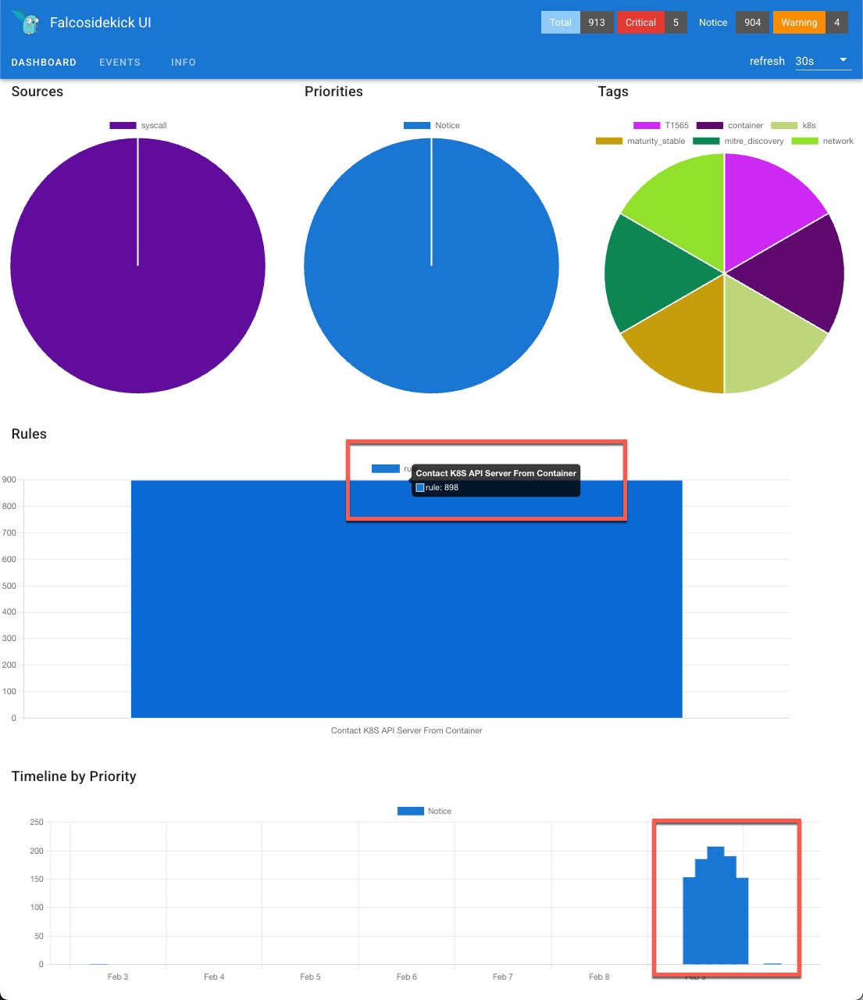
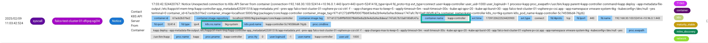
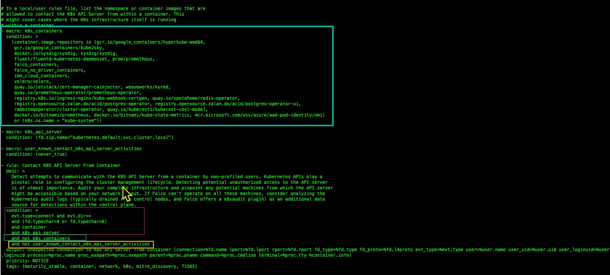
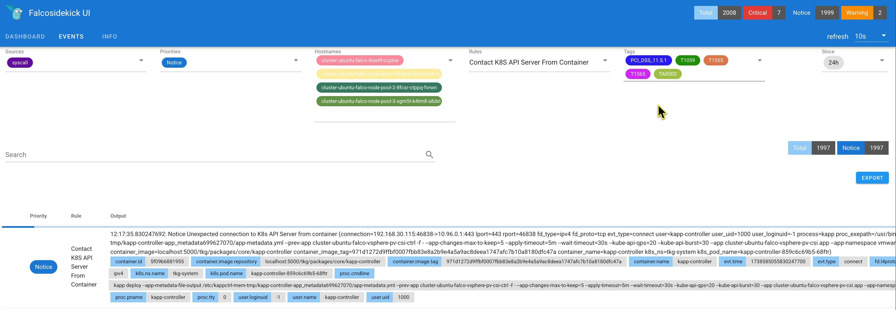
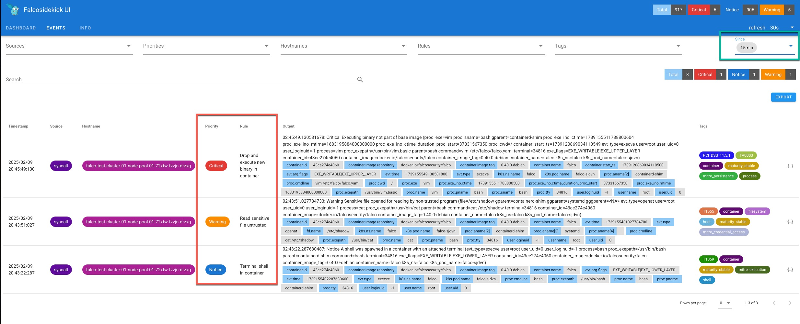

The rate of customers adopting the Kubernetes platform to host cloud-native applications for production use is quickly increasing. As expected with enterprise production applications, Kubernetes adoption is matched by compliance and security concerns. Starting with image security, the application team protects the supply chain by performing image scans to guard against critical vulnerabilities and confirm image provenance, using scanning tools such as Trivy and Notary. A great complement to this supply chain security would be a runtime monitoring solution on the vSphere Kubernetes Service (VKS) platform that observes the behavior of the container workloads in our cluster to detect potentially malicious activities. Falco is a real-time security monitoring solution that serves this purpose quite well. In this document, we will explore getting started with Falco on VKS. At a high level, we will perform the following.
Deploy Falco Threat Detection for Real-time VKS Worker Cluster Monitoring
Test and Review Out-of-the-Box Falco Rule Set
Customize Falco Rule Set for vSphere Kubernetes Service
Consider Best Practice for Pre-Production Testing of Falce
What is Falco
Falco is a cloud-native, open-source, runtime threat detection solution that surveils application system calls. Falco was eagerly accepted to CNCF on October 10, 2018. Falco achieved its current status of Graduated on February 29, 2024. Falco can perform threat detection for Kubernetes, containers, virtual machines, and physical hosts. Falco leverages Enhanced Berkley Packet Filtering (eBPF), to probe the operating system kernel for submitted system calls. The Falco eBPF probe compares the system calls and parameters to the ruleset to determine if the system call indicates a potential threat or a pattern that may indicate a compromised resource. An example may be a user executing a shell on a running container or accessing security-sensitive files or configurations. It's important to note that Falco's role is not to prevent potentially malicious activity. The critical role Falco performs is detection and alerting. With this information, DevSecOps teams can create methods to prevent or remediate threats uncovered by Falco.
Falco's primary threat detection method is via input from the kernel probe, specifically, system calls submitted by cluster workloads. However, Falco is capable of receiving input from other resources, such as logs and audit files. This functionality is possible via Falco's plugin architecture. Enabling cluster audit logging for Falco k8saudit-log plugins adds additional context to the threat protection data that Falco provides with its Modern eBPF kernel probe. The Modern eBPF Kernel Probe is the preferred instrumentation over kernel module instrumentation. While I consider including Kubernetes audit logging as a best practice, it's out of the scope of this document.
Prerequisites, Requirements and Recommendations.
Make sure that:
You Have Enabled vSphere Kubernetes Service on ESX 8u3 vSphere Cluster - Here's How
A vSphere Kubernetes Workload Cluster is Up and Running in vSphere Namespace with a storage class assigned.
You Have Edit Privilege on the Target Workload Cluster.
Kubernetes CLI with vSphere Plugin Installed on Workstation.
Helm 3.17 or Greater CLI installed and ability to Access Falco Helm Chart Repository.
Have Internet access to download Falco Helm Charts.
Deploying Falco to VKS Workload Cluster
Three primary methods exist to install Falco security monitoring at scale on VKS worker clusters. Installing Falco via Kustomized YAML templates or modifying the YAML manually for one-off deployment is possible. The manual editing method requires more configuration effort but allows the administrator to fine-tune the Falco deployment directly. The third and recommended method of deploying Falco to a workload cluster is via Helm, leveraging its values file or many command-line set options to customize the implementation. This document will focus on Helm for Falco deployment, configuration, and lifecycle management. The latest Helm version installed on your jump box or workstation is a requirement. Helm is installable via your favorite or native package manager. I have installed Helm using Brew for MacOS. Complete details for installing Helm for all platforms may be found here: Helm Install
I have a target workload cluster deployed running Kubernetes v1.30.1, based on Ubuntu, comprised of one control-plane node and three worker nodes, configured with VMClass best-effort-small.
Connect to target workload cluster using kubectl and the vsphere plugin and set context to target cluster. Create a namespace for Falco and configure pod security for privileged access.
Using Helm, install Falco monitoring with it default event rules, and Sidekick dashboard for event viewing. Specifying the storage class is required if the cluster does not have a storage class designated as default.
By default, Falco Sidekick is configured as service type ClusterIP. In the case the dashboard would be accessible via port forwarding. This is configurable via the Helm values file, but for this testing we will continue with the default.
With the above the sidekick dashboard should be available via: http://localhost:2802 Default Login Credentials: admin/admin
Optional Step: You may change the Falco Kickstart UI service to service type from ClusterIP to LoadBalancer. I've done so, but it's not really required for basic testing.
kubectl edit service falco-falcosidekick-ui -n falco
1 # Please edit the object below. Lines beginning with a '#' will be ignored,
2 # and an empty file will abort the edit. If an error occurs while saving this file will be
3 # reopened with the relevant failures.
4 #
5 apiVersion: v1
6 kind: Service
7 metadata:
8 annotations:
9 meta.helm.sh/release-name: falco
10 meta.helm.sh/release-namespace: falco
11 creationTimestamp: "2025-02-09T17:07:43Z"
12 finalizers:
13 - service.kubernetes.io/load-balancer-cleanup
14 labels:
15 app.kubernetes.io/component: ui
16 app.kubernetes.io/instance: falco
17 app.kubernetes.io/managed-by: Helm
18 app.kubernetes.io/name: falcosidekick
19 app.kubernetes.io/part-of: falcosidekick
20 app.kubernetes.io/version: 2.30.0
21 helm.sh/chart: falcosidekick-0.9.5
22 name: falco-falcosidekick-ui
23 namespace: falco
24 resourceVersion: "3005306"
25 uid: 680e0d1a-bfcd-4409-b2e1-6f8fe8ed583e
26 spec:
27 allocateLoadBalancerNodePorts: true
28 clusterIP: 10.109.241.49
29 clusterIPs:
30 - 10.109.241.49
31 externalTrafficPolicy: Cluster
32 internalTrafficPolicy: Cluster
33 ipFamilies:
34 - IPv4
35 ipFamilyPolicy: SingleStack
36 ports:
37 - name: http
38 nodePort: 31924
39 port: 2802
40 protocol: TCP
41 targetPort: 2802
42 selector:
43 app.kubernetes.io/component: ui
44 app.kubernetes.io/instance: falco
45 app.kubernetes.io/name: falcosidekick
46 sessionAffinity: None
47 type: LoadBalancer # <-- Changed from ClusterIP to LoadBalancer
48 status:
49 loadBalancer:
50 ingress:
51 - ip: 192.168.40.108
52 ipMode: VIP
Obtain your External IP using the following command.
kubectl get service falco-falcosidekick-ui -n falco

In my case the external IP is and exposed port, provides dashboard access via the following address: http://192.168.40.108:2802
Check the status of Falco to insure the Helm chart has properly deploy and all pods of the Falco daemonset and Sidekick deployment are in running state.
helm list -n falco
watch kubectl get all -f falco

Press Ctrl+C to stop watching Falco status.
Login to the Falco Sidekick portal to review syscall events based on the OOTB Falco K8s Ruleset. In my case the service falco-falcosidekick-ui is reachable via http://192.168.40.108:2802.
Events Based on Falco Starter Kubernetes Ruleset
As mentioned previously, Falco provides an Out-Of-The-Box ruleset to evaluate system calls and parameters for potential security threats. These OOTB rules are based on sound principles and best practices for generic Kubernetes clusters. The ruleset does not factor in using the vSphere CSI or other operational VKS workload cluster components.
As we review the initial events in the Sidekick dashboard, we notice many events numbering in the 100s of events over time. The portal indicates the rule violation is: Contact K8s API Server From Container. Let's investigate the details of this event, which is causing a large number of entries in our Sidekick dashboard. 
Reviewing event details, we find that the offending container is the kapp-controller under the cluster namespace tkg-system. The Kapp-controller is clearly a VKS Service that eases the effort of operationalizing workload clusters by managing the deployment and lifecycle of cluster service packages, such as Grafana.

Investigating the Falco default ruleset file, which is local on each node pod, managed by a daemon set, located /etc/Falco/falco_rules.yaml. The condition for the rule Contact K8s API Server From Container is a container running in the cluster that contacts the API server and is not present in the macro K8s_containers, a list of known OOTB containers. Another exception to this condition is containers listed under the macro: user_known_contact_k8s_api_server_activities. This undefined macro allows the platform administrator to identify containers typical to a VKS workload cluster and has expected contact with the API server. The undefined macro, user_known_contact_k8s_api_server, is a facility to modify the influence of the ruleset without directly modifying the based Falco ruleset, which is not recommended, as the base ruleset is updated and managed externally. Thus, modifications to the base ruleset may be overridden as the CNCF Falco Organization updates the base ruleset.

Let's create a macro, using the undefined user_known_contact_k8s_api_activities to define our known VKS containers. I should note that in addition to the kapp-controller, though less frequent, I noted additional container events listed in the Falco Sidekick dashboard that shuld be defined in our user_known_contact_k8s_api_activities macro.
Tuning and Testing Falco Eventing
Again, Falco provides a great starter, OOTB ruleset, to evaluate system calls and parameters from VKS clusters for potential security threats, which may include regular container and controller behavior. On the one hand, reporting normal cluster behavior on a regular basis could assist in identifying anomalous or deviating cluster behavior. If you agree with this approach, notification of expected behavior may be helpful. However, if your focus is more event-based, recording these typical and expected events may become "noise", diminishing the usefulness of events and alerts.
In the context of operations, we commonly refer to this conversation as the signal-to-noise ratio. We want a "5x5", clear signal, and a low noise ratio. In other words, we want clear indicators of events requiring attention versus a large number of informative or unclassified events requiring no decisive conversations or actions. For this reason, we will observe the Falcosidekick UI to identify expected communications and tune the ruleset to eliminate the volume of uninteresting syscall events. The immediate standout events are related to the VKS kapp-controller. The Kapp-controller is a package management solution unique to VKS; the Falco OOTB rulesets will consider system calls from the Kapp-controller potentially suspect. Applicable software packages added via the kapp-controller, or any software management solution may be considered suspect and reported by Falco as unexpected. Examining events in the Falco Sidekick portal, filtering on priority "Notice," I see several entries based on VKS controllers, including containers Kapp-controller and vsphere-syncer; both are expected and required API server connections for a properly functioning VKS cluster.

Let's tune the Falco default ruleset. You may have noticed in the previous screenshot that the default ruleset allows API server access for containers in the cluster namespace kube-system. I will use the same pattern to accommodate my VKS system containers. I will redefine the macro: user_known_contact_k8s_api_server_activities to include the cluster namespaces that start with vmware-system and are named tkg-system. Here is the YAML defining this Falco macro, in a file named vks_falco_rules.yaml (copy the contents code below to a file named vks_falco_rules.yaml).
- macro: user_known_contact_k8s_api_server_activities
condition: (k8s.ns.name startswith vmware-system or k8s.ns.name=tkg-system)
Now, let's test this macro on our workload cluster. The expectation is that Falco threat detection will not event on system calls from containers in the cluster namespaces starting with vmware-system or named tkg-system. For ease of testing, let's uninstall the current test Falco deployment
helm list -n falco
helm unistall falco -n falco
Now with a VKS customized rule based, free of extraneous events, let's redeploy Falco with our custom rule definition (vks_falco_rules.yaml), consisting of our redefinition of the macro user_know_contact_k8s_api_server_activities.
Now, let's review our Falco Sidekick portal, specifying a time window os 15 minutes to avoid messages prior to application of our redefined macro which includes our VKS system containers.
Testing Falco on VKS with Customized Rules
We now review the Falco Sidekick dashboard with a time window of 15 mins. It confirms that the VKS customized macro we put in place has reduced uninteresting and expected system call activity.
Let's now perform a test using the Falco pods, which are also under security surveillance. The following activity should be observed and noted in the Falco Sidekick dashboard.
Install and execute a binary/package not included with the container image (install VIM and execute VI).
All of which are notable security events on a VKS worker cluster. Now easily observed by the DevSecOps team, free of event noise.

Best Practices for Pre-Production Testing
It's important to point out the focus of this document is pre-production testing and production best practices are not included in this documents. My strong recommendation would be to include Falco as a GitOps component, including customized VKS and application rules. For testing purposes, we created a customize VKS macro and included this in our testing via command-line. However, outside of testing, custom rules should be deployed to a Falco implementation via a configmap and version controlled. This practice will greatly ease the overhead of maintaining Falco and it's customized rulesets.
The great news is that Falco supports the use of configmap and will create the same with a bit of modification to the YAML to be past via the Helm values file along with volume mount instructions for the daemonset.
What you've Learned
Falco is a lightweight tool capable of enhancing security strategies on VKS Kubernetes clusters by providing real-time threat detection via monitoring system calls and Kubernetes events to identify suspicious or unauthorized activities. It alerts based on well-known compliance with security standards, detection of privilege escalations, and safeguards against supply chain attacks. Most importantly, Falco is extensible, with a well defined set intrinsics. As an open-source CNCF project, Falco continuously evolves to provide proactive security, making it a powerful choice for securing VKS workload clusters.